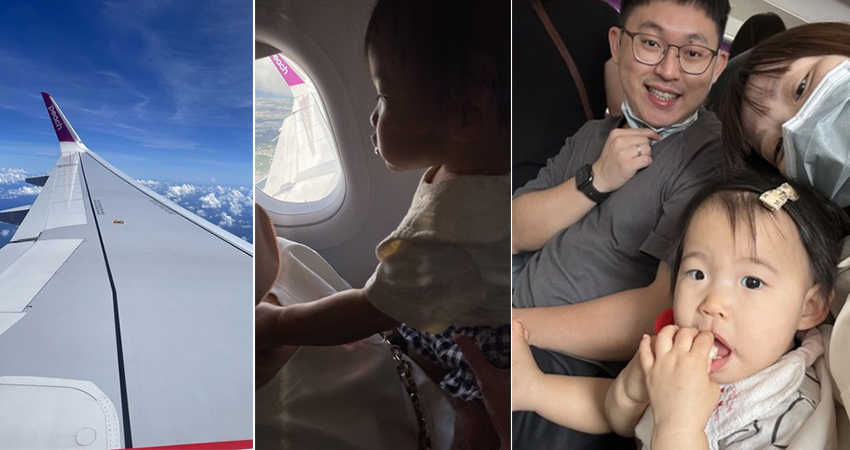
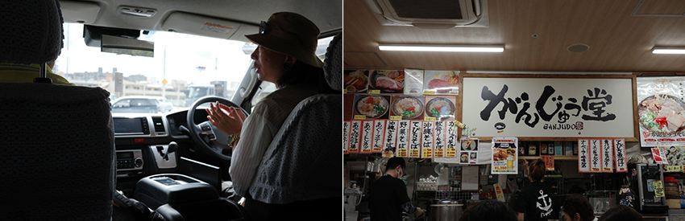
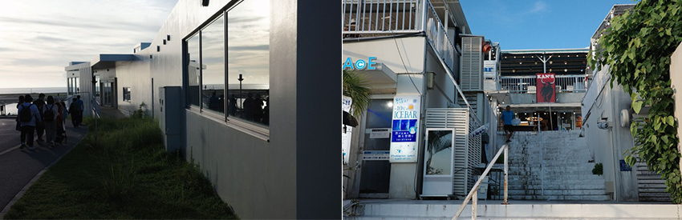
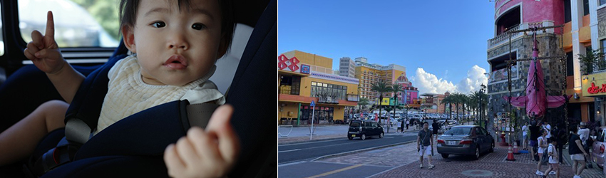
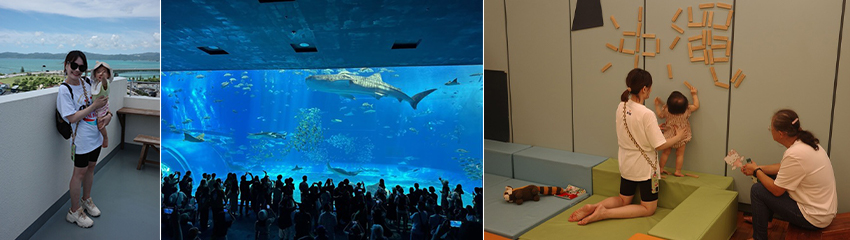
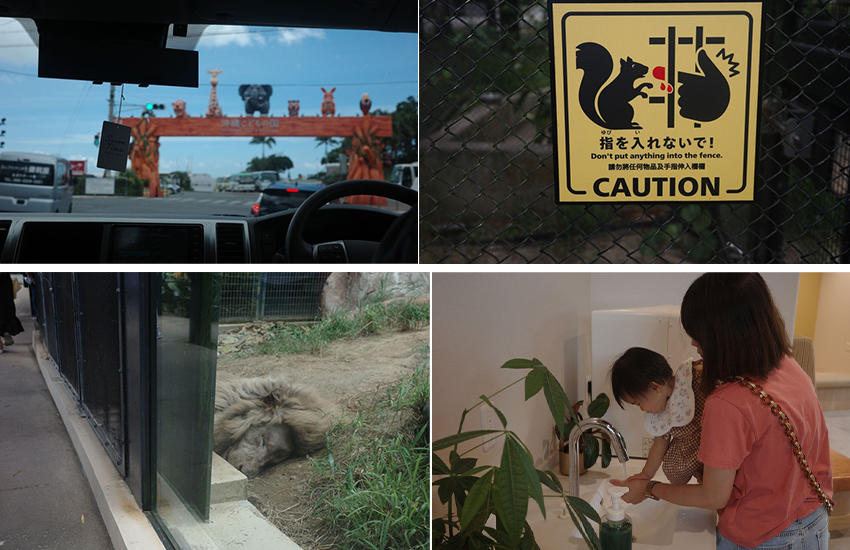
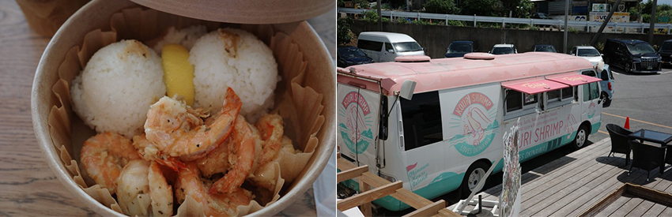
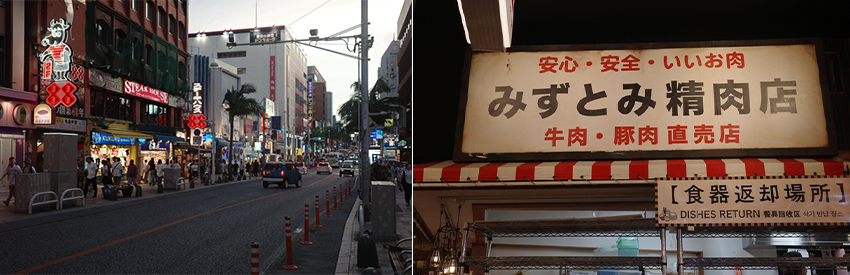
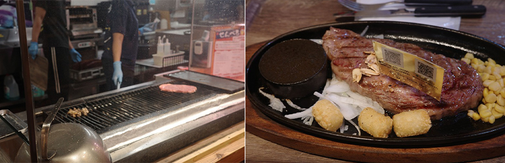

雖說沖繩距離台灣僅627公里，但文化風情上還是與台式民俗差了一大截。我對沖繩的第一印象是陽光灑落，擁有無邊際的海岸線，讓沒去過沖繩的我滿心期待，不過特別的是身邊帶著剛滿一歲的女兒作伴。
|  |
這是女兒第一次搭飛機出國，做足了功課，按照網友們建議的SOP做一遍，只為了壓抑著我這位內心忐忑不安的家長，深怕孩子一個崩潰，鬧得整趟飛行須賠個不是，不過，好在這些都只是我腦中的幻想，控制航程在一個半小時內直飛沖繩，女兒就像是勁量電池充滿電力，很乖的玩好玩滿整個航程，但累癱了我這位爸爸。
一出境，在熾熱酷暑的當下感受到，原來！這就是暑假的沖繩。日本精密的建築、乾淨整潔的街道、尊重禮貌的人情以及深度文化的美食，就是我很喜歡日本的原因，總是這麼親近迷人，很不一樣的是，有了親愛的家人陪伴，每種體驗都是無可取代的回憶。
一趟家族旅行13人，我們請了當地導遊駕車行走，到沖繩大約是中午時候，先去下塌在牧志區域的旅館沖繩逸之彩放行李，隨即出發前往牧志市場飽餐一頓，由於日幣匯差關係，日幣變得非常非常便宜，可以說是隨心所欲的點餐享用美食，當下就吃了間道地的海鮮餐廳及烏龍炒麵，用完餐後離開牧志市場沿著國際通散步吃鹽冰（蠻推的！可以自己加不同口味的鹽種），前往DFS買太太鎖定目標的Chanel，頂著37度高溫，能在室內稍微逛一下冷卻身子、補充水分是必須的，因為六月底的沖繩實在是太辣了！
|  |
接近傍晚時分，我們一行人就去了瀨長島，這是我去沖繩必去的景點之一，悠然白色調，層次堆疊的小店，開闊邊際的視野，也剛好臨近美軍戰機起降的那霸機場，震耳煙硝的音爆為瀨長島美景增添了一些激動。瀨長島的小店有些真的還不錯！小店算多，但有些座位並不多，更別說被台灣人炒起來的幸福鬆餅，一位難求啊！瀨長島的風景，下午傍晚甚至是晚上的氛圍也截然不同，來沖繩真的值得安排到行程裡。
|  |
這次去沖繩是五天四夜的行程，從南到北，再從北回程到南一路玩回機場，導遊每一天都安排得很妥當，去了非常長的鐘乳石玉泉洞、波上宮、美國村、萬座毛、永旺購物中心、KARIYUSHI渡假村以及美麗海水族館，都是沖繩很棒必去的景點，想當然吃的美食也不能錯過，而且每個路途中LAWSON和7-11都是必去的啦！除了補充水份外，買買零食帶回國也是必須的XD，我先放上一些在沖繩拍攝的美照，再來好好用美食做個文章的結尾。
|  |
|  |
美食之前，我們也去了一個我很喜歡的地點，沖繩兒童王國動物園，整體園區不大，但是動線規劃的很好，非常適合帶小朋友去走走認識動物，警示招牌也是很用心針對TA在設計，有趣但不失去威嚇作用，園區的服務人員態度親民，就連獅子也能非常近距離的觀賞其睡姿；當天入園有個小插曲，走過的小動物區突然被工作人員封鎖起來，並被指示依照原路往回走，原來是調皮的山羊逃出了圍籠，園區人員大動作的在進行圍捕，從這裡就可以感受到日本人做事的效率與謹慎程度，非常值得學習！當然，身為幼兒的家長，更不得不說育嬰室真的很讚！乾淨而且明亮，完完全全不輸給百貨公司，推薦給有孩子的大家，是個讓孩子放電的好地方！
|  |
說到吃呢！也是旅行中很重要的事情，第二天的早上，我們在古宇利大橋拍完照後，直接衝往蝦蝦飯享用午餐，導遊也是很給力，認識店家，所以我們一行人直接進到室內就入座等待美食上桌，鮮蝦非常大隻而且份量大，白米略顯黏稠（女兒也是可以接受的範圍XD），加上黃檸檬的提味解去了蝦飯的油膩感，蠻值得一試的。
|  |
在國際通靠近牧志市場附近有區美食街內的牛排店「みずとみ精肉店」，非常推薦給大家！肉質軟嫩鮮美，多種選擇，購買方式是先去肉區挑選一塊想吃的部位，有石垣牛、和牛、沖繩獨有的阿古豬等，再請老闆秤重，然後針對菜單選擇是否加飯或是飲料搭配成套餐，選好後直接上烤網嫩煎大約10分鐘時間就香噴噴的送上桌啦～而且店家很貼心的會附上一塊熱石，這種新鮮當天宰的牛體，店家通常是以五分熟為主，若不敢吃太生的人可以在熱石上加熱，當天我吃的是和牛，油質分佈均勻，肥瘦肉得體，入口鮮嫩多汁，吃得到牛排中的甜味，配菜洋蔥可以稍微解膩，夏天吃必須配上可樂，真是一大享受！而且受惠於日幣匯差，我、太座及父母兩位，共四人只花日幣18,710，換算台幣是3,800元左右，簡直是不可思議的價格，對比一份300克（約10oz）的牛排在台灣雅室沒賣個台幣2,000元是不可能的，更別說和牛等級了，現在的日本真是好吃又好玩！
|  |
|  |
其實，這次的旅行是我國門解禁後第一次出國的地點，也可能是因為太久沒出國，對一切事物都抱持著非常期待的心情，也可能是有家人和女兒的陪伴，一切感到新鮮，其中更包含了女兒隨時會失控的恐慌，好險事實證明是我多慮了，還沒發生的事情保持期待和彈性，一切都會很美好！期待下次與女兒挑戰不同國家旅行的體驗。